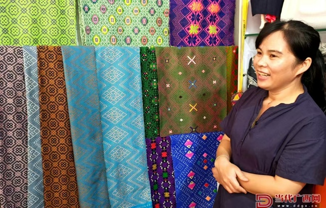
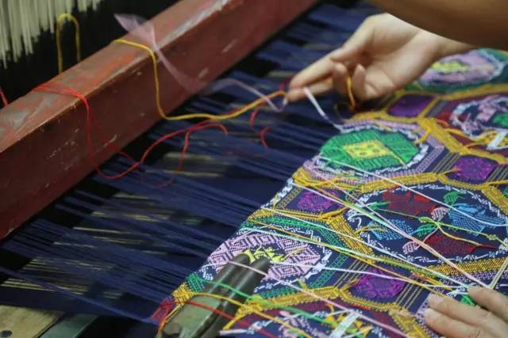
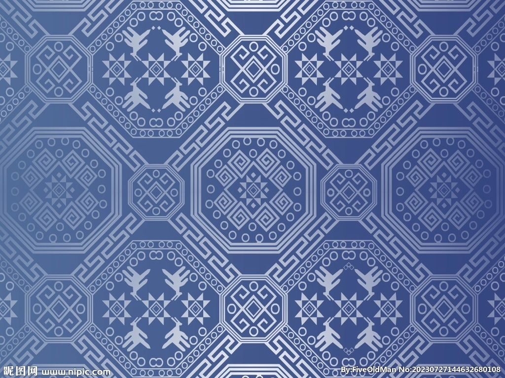

壮族织锦技艺历史十分悠久。早在唐宋时代，就已经形成了工艺较好的织锦，那时候壮族的蕉布、竹子布、吉贝布、斑布、丝布等已成为宫廷贡品
但据古籍文献记载，真正能够称为“壮锦”的纺织品则出现于宋代，距今已有九百多年。这一时期，壮族的纺织业进一步发展，除普通的布帛以外，还出现了丝、麻、丝棉交织的锦。
宋代“白质方纹，佳丽厚重”的布，就是早期的壮锦。 北宋元丰年间，吕大防在四川设蜀锦院，织锦四种之中，即有广西锦（即壮锦），为上贡的锦帛之一，可见壮锦之名贵。
明清时期，壮锦已发展到用多种色彩的绒线编织，使壮锦呈现出绚丽的色彩，虽仍为皇室贡品，但平民百姓亦可享用。当时，各州县都有出产，壮锦不仅成了壮族人民日常生活中的用品和装饰品，编织壮锦更是壮族妇女必不可少的“女红”。
清末民初，壮锦逐渐开始衰落。新中国成立后由于国家实行民族政策，提倡发掘民间民族工艺品，靖西县于1956年组成绣织社，1960年改称壮锦厂，从事壮锦生产和招工培训。壮锦产品多次参加全国、全区举办的民族工艺品展览，产品远销港澳、新加坡、日本、美国、加拿大等国家和地区。

首先，纺线即用棉花纺成棉线。其次，染线，根据图案搭配需要，把纬线染成红、黄、蓝、黑、绿等颜色。
第三，浆线，用米汤或粉浆等浸润纱线。第四，卷纱，把经纱卷成筒状。
第五，拉纱，这里指的是拉纬纱。第六，梳纱即梳理经纱、纬纱。
第七，穿棕、穿扣，把经纱、纬纱穿在棕子、扣子上。最后，结花板，按花板规格配制各种颜色、图案，织成色彩斑斓的壮锦。
以线为媒，以手为艺，一生择一事，一事守一生
出生在龙州县金龙镇双蒙村板池屯，地处中越边境，是壮族织锦技艺的发源地之一。
“这里家家户户都织壮锦，我从小就跟着家里人学。”李素英告诉记者，她6岁开始学习织锦，12岁便独立织出了一床壮锦被面，壮锦早已成为她生活中不可缺少的一部分。壮锦织造是一门复杂的工艺，先后要经过纺纱、络线、倒线、装纡、户外牵经、拾交、梆结、穿筘、卷经纱、经纱安装、悬挂花筒、织锦十二道工序，耗时很长。“完成一条经线与纬线的交织需要手脚的多步精细配合，每天数万次的机械操作极大地考验着织娘的耐力。”李素英说，即使是经验丰富的织娘，工作一整天也只能织成20厘米的壮锦，花纹复杂时一天仅能织出10厘米，可谓“一寸锦一寸金”。
“以前壮锦仅限于自家使用，产量有限，图案样式也不多，跟不上市场的需求。”李素英意识到，传统审美已不能满足市场需求，销路也比较单一，壮锦要传承下去，就要以市场化推动传承。只有“用”起来，才能“活”起来。2019年，李素英做了两个大胆决定：一是掏出5万元积蓄，在村里建起壮锦作坊，从当地召集20多名妇女作绣娘，并提供免费培训；二是揣着几匹老纹样壮锦，踏上前往杭州、上海的列车，学习借鉴新技术、了解市场需求。这趟行程让她收获颇丰，也让她明白“老纹样要守住，但装纹样的‘瓶子’得换新”。回到村里，李素英毅然决定创新，根据市场需求和现代人的审美习惯，结合崇左壮族文化的特色元素，丰富壮锦的图案、色彩和样式。经过一番努力，李素英终于研发出围巾、衣领、袖口装饰等新产品，尤其是将壮锦装裱成屏风、艺术画，挖掘壮锦的观赏性和实用性，开辟壮锦的新用途。李素英设计的第一批壮锦挎包在景区上架后，很快便销售一空。“色彩浓郁、用线较粗的是早些年的作品，淡雅精致、手感细腻的是这几年推出的新品。”走进壮锦世家工作室，一面五彩斑斓的“壮锦墙”见证了李素英的传承创新之路。“如今不仅有本地老百姓购买壮锦，很多游客都会带走一些壮锦文创。”李素英告诉记者，经过设计创新，工作室的产品订单越来越多，还销往粤港澳大湾区及国外，年销售额达60万元。壮锦的热销让李素英变得更忙了，她经常带着新设计的产品在各类展会和大赛上进行推介，并通过社交媒体、网络直播等途径展示创新研发的产品，吸引了越来越多的消费者，推动壮锦文化及编织技艺进校园、进景区、进展会，让越来越多的人了解壮锦的历史文化内涵。
近年来，李素英研发的壮锦新品多次获得广西工艺美术作品“八桂天工奖”等奖项，她也获评龙州县第二批乡土人才、崇左市工艺美术大师、“自治区级乡村工匠”等称号。在传承中华优秀传统文化的同时，李素英也为当地乡村振兴、群众增收致富作出了贡献。截至目前，壮锦世家工作室已培训织工40人，其中脱贫户群众37人，就业后可实现人均每年增加收入3500元至1万元。能带着村里的姐妹们织锦创收，让大家都过上好日子，李素英心里很是高兴。“希望有更多人关注、了解壮族织锦技艺，传播壮锦文化。随着文旅融合的深化，壮锦文化将走得更远、更好。”李素英对壮锦的未来充满信心。


规模特征：
壮锦为国家级非遗，市场呈**“核心手工小众化+衍生文创规模化”**特征：纯手工核心产值偏低，衍生文创（背包、配饰等）增长快，2024年壮锦背包市场规模超20亿元、年增12.9%；线上渠道占比达58%，远超传统线下。价格梯度清晰，高端手工定制（挂毯、嫁妆）数万元，中端文创（背包、围巾）300-1000元，轻量化衍生品（口红包）100-300元，覆盖不同消费层级。政策与产业端双重赋能，广西地方财政扶持工坊建设、织娘培育，“传承人+企业+农户”模式成型，同时引入现代生产流程突破产能瓶颈。
核心人群：
1. 国潮时尚青年（74%）：18-35岁为主，核心消费群体，偏好壮锦元素跨界产品（背包、配饰），注重颜值+实用，青睐150-300元线上爆款，看重社交属性。
• 文旅游客（40%）：25-45岁，偏好便携衍生品，客单价300-800元；
2. 文旅游客（15%）：25-50岁，以广西及周边游客为主，买轻量化纪念款（围巾、小摆件），客单价300-800元，关注地域辨识度与工艺质感。
2.3. 文化收藏/高端定制群体（11%）：35岁以上高收入者，选纯手工传统纹样产品，客单价2000元以上，重视工艺纯度与文化溯源，部分需求延伸至海外。
需求趋势：
设计年轻化、场景多元化；个性化/企业定制需求崛起；“产品+织造体验/文化讲解”的体验式消费成主流；追求天然环保材质与高性价比平衡。
决策关键：
1. 优先看非遗手工属性+传承人/工艺认证，愿为工艺溢价；2. 注重设计与实用适配，拒绝“闲置型文化品”；3. 依赖非遗认证、溯源信息、区域头部品牌的信任背书。
渠道分布：
- 线上（58%）：增长核心，抖音/天猫为主，“直播+短视频”是主流模式，150-300元产品销量最高，打破地域限制辐射全国/海外；
- 线下（42%）：主打体验与高端场景，含景区文创店、传承人工作室、高端专柜，客单价更高（平均380元+）； - 跨界/B端：品牌联名、企业礼品定制、酒店软装、出口贸易成新增长点。主要问题：
1. 供给端：纯手工产能低、传承人老龄化，天然原材料涨价推高成本；
2. 市场端：无全国性知名品牌，产品设计同质化、部分偏“老气”，仿制品泛滥； 3. 行业端：缺乏统一工艺/产品分级标准，部分区域线上运营能力弱。优化建议：
•产品端：打造“手工高端款+半机械化大众款”矩阵，联合设计师推动纹样现代化、场景多元化，开发轻量化、易护理产品；
• 产业端：培育青年传承人，布局原料基地稳定成本，加强知识产权保护；
• 渠道端：线上线下联动，拓展B端定制市场；
• 渠道端：线上线下联动（线上引流+线下体验），拓展跨境电商与B端定制市场；
• 行业端：培育区域头部品牌，制定统一分级标准，搭建产品数字化溯源体系；
• 推广端：借国潮、融媒体讲好壮锦文化故事，通过非遗进校园/文化节提升大众认知。